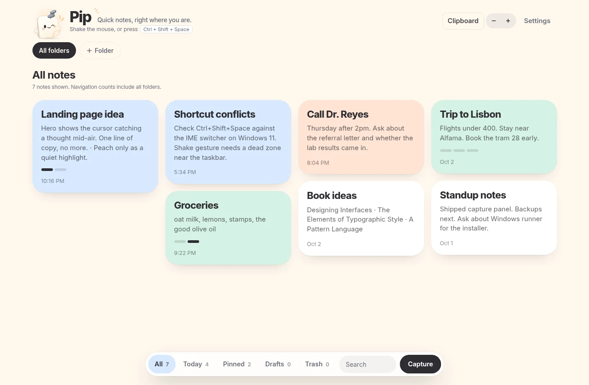
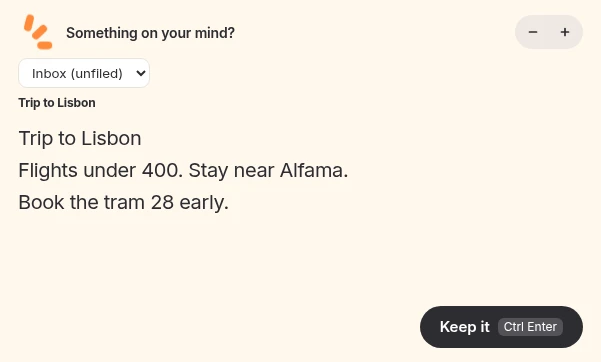
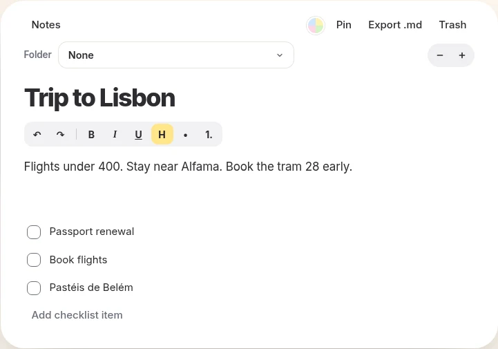

Catch the thought before it gets away.
Shake your mouse. Type. Go back to what you were doing. Pip is a calm little notes app for Windows. It stays out of the way until you need it.
Free while Pip is in early access. Windows 11, 64-bit. Version 0.2.21.
New in 0.2.21: move cards freely and tidy them with Auto arrange. Plus a resizable capture box for long pastes.

Shake. Write. Back to work.
You're in the middle of something. Shake your mouse, or press Ctrl+Shift+Space, and a small capture box appears right where you are. Write it down, hit Ctrl+Enter, and it's saved. Then you're back, exactly where you left off. Press Esc and your half-written thought is kept for next time.
Drag the capture box's edges or corners to resize it. It stays on screen, and long pasted text scrolls inside so the Keep button stays visible.
Powered by Jev
A title and a place for the thought.
Powered by Jev, Pip suggests a title from your own words and a folder you already have as you type in capture. Pick a different folder whenever you want. Your choice wins.

Suggestions happen during capture.
While you're signed in, capture text and folder names are sent to Pip's own service for title and folder suggestions powered by Jev. This happens as you type, before you save.
Your folder choice comes first.
Choose a folder in the capture dropdown to override the suggestion. You can edit the saved note's title too.
Saving doesn't wait.
If a suggestion is unavailable or uncertain, Pip uses a first-line title on your PC and keeps the current folder.
A board you can read at a glance.
Move your note cards freely around the board, or use Auto arrange to tidy them. Pin the ones you need, tick off checklists, search by title or body, and sort things into folders. Pick card colors and turn the text size up or down with the - and + buttons.

The rest of the desk.
- Floating notes
- Keep a note on screen while you work in something else.
- Checklists
- Plain checklists inside any note.
- Light and dark
- Follows Windows, or pick one.
- Plain text
- Export any note as Markdown, or all active notes as a JSON file from Settings.
- Notes with your account
- Sign in with Google or ChatGPT. Your notes sync through your own Pip account.
- Clipboard history
- Paused by default. Enable it in Clipboard to keep copied text and images on this PC. Pause it before copying secrets.
- Calm motion
- Turn animation off in settings, or let Windows do it for you.
What stays. What is sent.
- Notes and your account
- A copy of your notes lives on this PC. Pip requires sign-in, and notes sync through your own Pip account. They are not stored only on your PC.
- Capture-time suggestions
- While you're signed in, Pip sends the text you're capturing and your folder names to Pip's own service for title and folder suggestions powered by Jev. It does not send your other notes or clipboard history for these suggestions.
- A local fallback
- If suggestions fail or aren't confident enough, Pip uses the first line as the title on this PC and keeps the current folder. Saving doesn't wait for Jev.
- Clipboard history stays here
- History is paused by default, saved unencrypted on this PC, and never syncs. Enable or pause it in Clipboard. If you choose "Keep as note", that item becomes a note and syncs with your account.
- Capture settings in 0.2.21
- Title and folder suggestions, powered by Jev, run automatically while you type in capture. Settings explains the feature. Version 0.2.21 has no switch to turn it off.
- Your way out
- Export any note as Markdown from its editor, or all active notes as a JSON file from Settings.
Good to know before you install.
- Account required. Sign in with Google or ChatGPT to use Pip. General Ask and bring-your-own-key AI are not in version 0.2.21.
- Windows only for now. There's no Mac, Linux or phone version yet.
- Windows may warn you. The installer isn't code-signed yet, so SmartScreen may say "Windows protected your PC". Choose "More info", then "Run anyway".
Need it later? Pip it.
Made by a note power user. - Joe
Download for WindowsFree while Pip is in early access. Windows 11, 64-bit. Version 0.2.21.